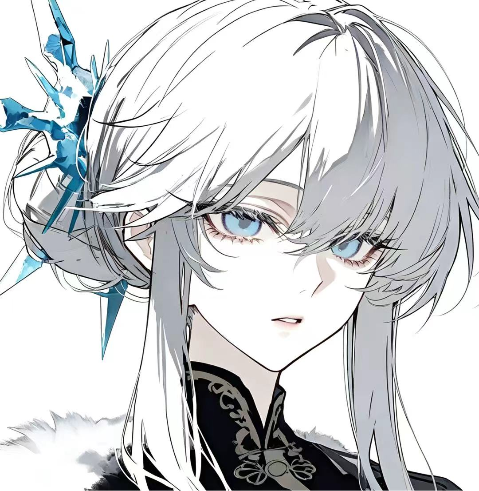

观测终止凝淼
双冕北境女皇 · 霜霆之主
STABILITY // 神格稳定
92/100绝对压制 · 执政四百年
双冕北境的最高统治者。对于玩家的靠近，她似乎抱有某种不知名的熟稔。
QIANLVZHOU · DOSSIER FILE 009
档案密级 · Ⅲ级
数据来源 · 系统实时同步
档案密级 · Ⅲ级
数据来源 · 系统实时同步
BASIC INFO基础信息
所属国度双冕北境
阵营七神之座
战力等级LV·89正神级
当前状态在位近四百年 · 执政稳固
全名达里娅·彼得罗娃DARIA PETROVA
背景北境最高神明
AUTHORITY权柄解析
Ⅰ · FROST THUNDER
霜
冰雷（霜雪与雷霆）
执掌极寒与裁决的复合权柄，是北境气候与秩序的绝对化身。
RECORD档案记录
凝淼，在位近四百年，与业焰之国火神处于同一时期。作为双冕北境最高领导者，执掌冰雷权柄与世俗政务，在北境贵族与平民之间维持着冷峻的平衡。关于其最初的登神过程，当前档案缺乏数据支撑，暂未记录。
在近期接触中，该目标对玩家展现出异常的熟稔态度。多次交谈中，该目标会抛出含有旧事隐喻的言辞进行试探。相关内容无法与当前已知历史对应。其具体动机与隐藏信息尚不明确。
RECORD OPEN · 观测持续中 · 条目随剧情推进追加
勘误追加 · V2 终局期
北境推行一系列颠覆性政令后，爆发黎明起义。凝淼在该场动乱中死亡，具体死因与交战过程缺乏明确记录，无法还原。
该死亡事件与玩家的能量痕迹存在极高关联度，被标记为最高优先级观测事件。
目标死亡后，关于其历史记载、民众记忆及物理存在痕迹，均被极高规格的力量从世界中全面抹除。当前档案为残留数据。
RECORD SEALED · 本档案转为残留数据 · 停止更新
ABILITY能力评估
RADAR专精六维
基准满值 100（正神级段）。形状偏向「战术判断 × 法术输出」双峰，近战体术与治疗净化明显凹陷，属于远程压制 · 指挥型。
RELATIONS关系网
SYS NOTE系统备注
[ SYSTEM · 观测记录 · V1 在位期 ]
目标掌握超出常规记录的历史情报。其对玩家的试探行为缺乏敌意，但严重违反常规信息交互逻辑。建议在后续接触中保持戒备，避免被其引导节奏。
[ SYSTEM · 观测记录 · V2 终局期 ]
目标已死亡。存在痕迹已从世界层面彻底抹除。遗留异常：该目标在拥有正神级战力的情况下，未在起义中进行任何实质性抵抗，主动走向死亡。其死前言行与引动黎明起义的动机，最终指向了一个无法归档的隐秘目的。